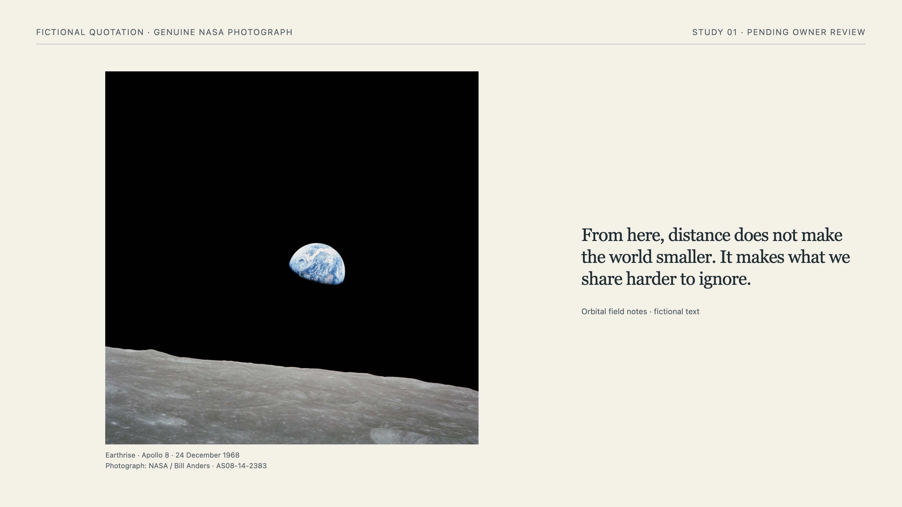
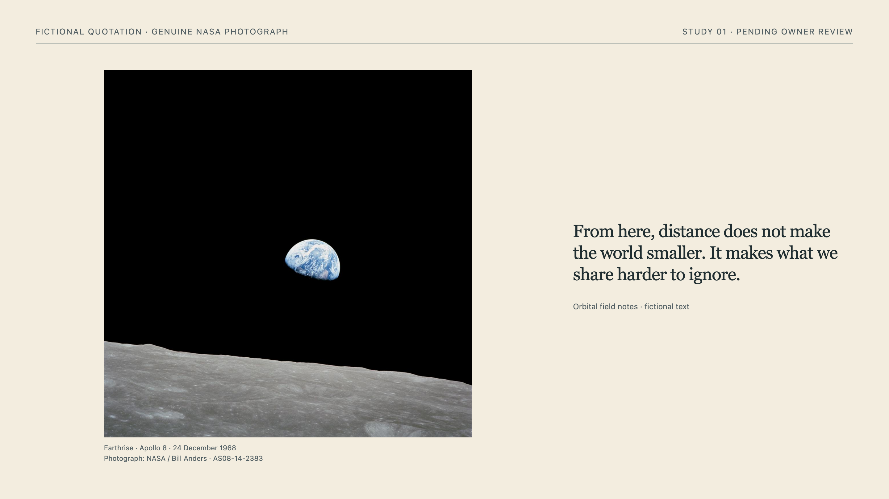
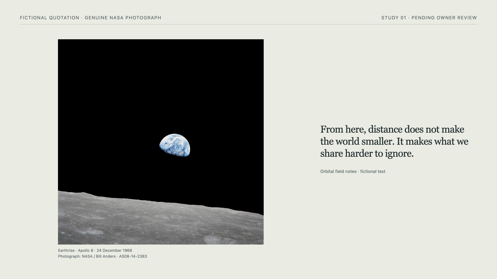
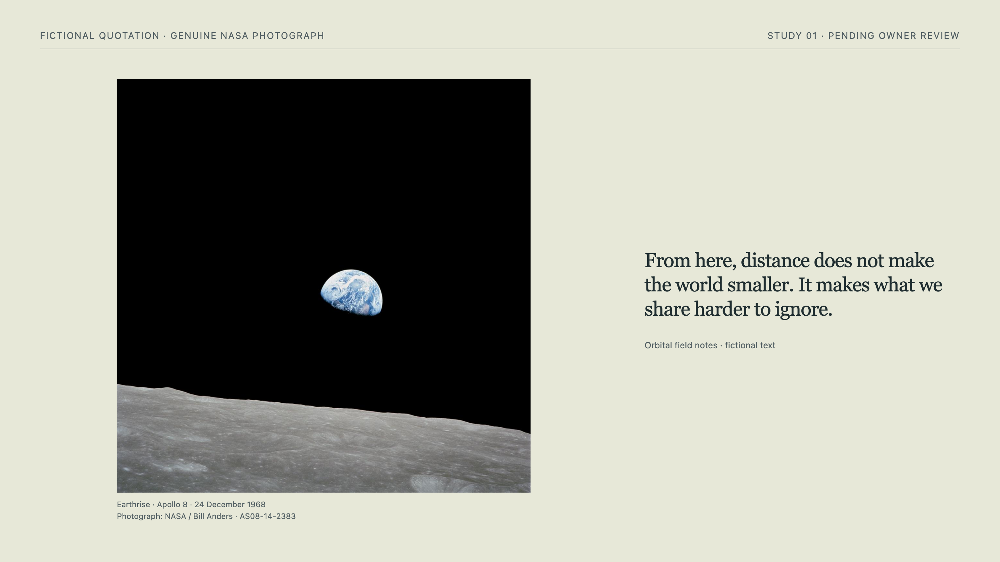
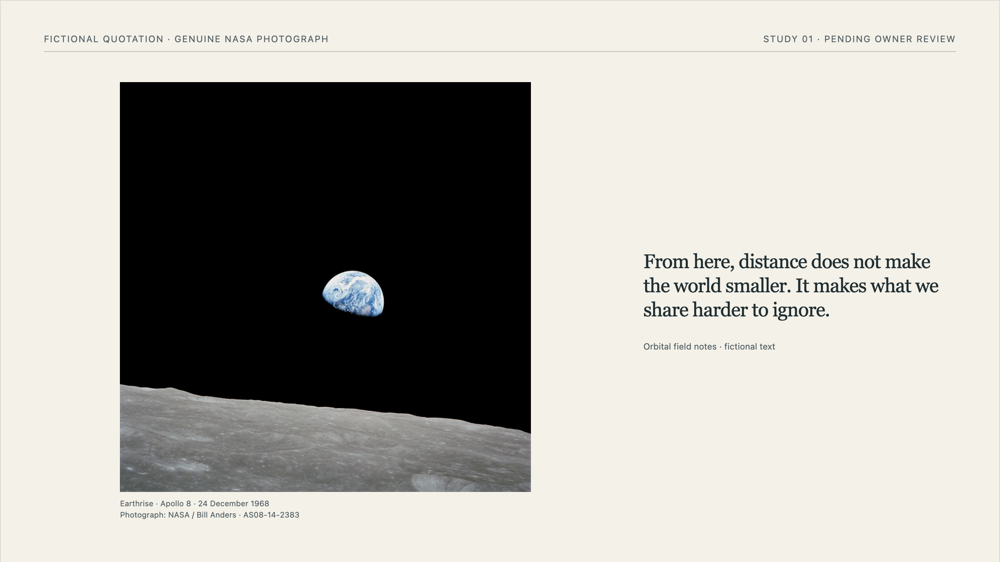

Visual foundations / 15 October 2026
What colour
is for.
Paper for the example slides. A precise light surface for reading. A stronger pink signature for Kata.
Round 5.
Reading ink.
Petrol emphasis.
Paper family adopted: 1 is the default; 2 and 3 are equally valid warm and mineral alternatives. Use one consistently within an example deck. These provide natural variation grounded in the core paper, without assigning semantic categories. Paper 4 remains an exploration.
Adopted roles: toned black #111217 for body text, captions and metadata; petrol lch(34 25 220) for headings, highlights, underlines and emphasis. Selected text backgrounds use petrol with paper-coloured lettering. There is no green accent or enclosing colour panel.
The same quotation compares a petrol underline with a phrase-level text background. Both preserve dark reading ink and the original words. The supplied photograph retains its original colours; the surrounding site retains its raspberry identity.
Owner decision: adopted. Colour study complete. The final example palette is petrol, toned black and one of papers 1–3. Typography and the site palette were already accepted. This closes the colour decisions, not the whole 0.5.0 release or a global theme rollout.
Earlier direction, rejected: the petrol/green/black/paper combination and enclosing green panel. Previous comparison.
Paper 1 · Original
lch(95.2132 4.24718 89.5919)
Paper 2 · Original + warmer
lch(93.8137 7.43229 86.5692)
Paper 3 · Original + mineral
lch(93.0059 5.17116 111.736)
Round 4.
Paper beside ceramic.
The documentation palette is settled. The next question is the example decks: they stay on paper surfaces, but the original paper needs reconsidering against the accepted ceramic background.
The original paper and three LCH mid-tone blends use the exact same slide. Only its background colour changes. Ink, photograph, fictional quotation, labels, typography and composition stay fixed. No shadow or new border is added to manufacture separation. The surrounding field stays ceramic #f8f9fa, with toned black and raspberry navigation.
These are flat colour studies, not simulated paper textures. Study styles now use LCH equivalents of the existing colours; historical hex values remain as provenance. CSS LCH reference. The three mid-tones use 50/50 CIE LCH interpolation (D50, shorter hue), calculated before display conversion. The source colours were: original #f4f1e9, warmer ivory #f2e8d5 and mineral #dfe7dc. They are not named Reasonable Colors shades. Initial candidates remain recorded. Petrol and green ink are deliberately left for a later decision so the surface can be judged on its own. No dark slide is proposed, and no Lys-wide theme is adopted.
Open the four-paper Lys deck · Arrow keys, Home and End at presentation size; scrolling on phones. The deck also works without JavaScript.

1 · Originallch(95.2132 4.24718 89.5919)
2 · Original + warmerlch(93.8137 7.43229 86.5692)
3 · Original + minerallch(93.0059 5.17116 111.736)
4 · Warmer + minerallch(91.6063 8.35627 108.714)1 · Original
The original paper, unchanged as the control.
The palest reference: judge how clearly its edge separates from ceramic.
2 · Original + warmer
50% original + 50% warmer ivory. A restrained increase in warmth.
Tests whether a small warm shift gives enough separation without the full ivory cast.
3 · Original + mineral
50% original + 50% mineral. A softer green-grey paper.
Tests a quieter mineral tint while keeping the original paper’s lightness.
4 · Warmer + mineral
50% warmer ivory + 50% mineral. Warm and green undertones meet.
Tests a balanced, deeper neutral between ivory and mineral.
Paper mid-tones.
The owner requested a tighter comparison: original, original + warmer, original + mineral, and warmer + mineral. Each blend is 50/50 in LCH; judge the paper against the same ceramic surround.
Owner decision: adopted. Papers 1–3 form the example paper family: 1 is default, 2 and 3 are equal alternatives. Keep one paper consistent within an example deck. Natural variance is grounded in the core paper, without semantic categories. Paper 4 remains an exploration.
Provenance: the generated deck starts from Study 01’s frozen Lys deck and duplicates its first specimen with only per-slide paper overrides. Previews are browser captures of that deck at a 1440 × 1000 viewport and 2× pixel density. Candidate values and rationale · Deck generator. The inherited NASA photograph, fictional text, licenses and pinned Lys runtime retain their original provenance. Preview captures need refreshing if the deck changes.
15 October 2026 · Owner: Ville Takanen supplied the paper-only boundary and candidate directions. Codex proposed exact values, prepared the variants and performed the recorded checks. This is a design exploration; neither material authenticity nor reader response is established by it.
Round 3 · Adopted Kata direction
Paper for the work.
Pink with presence.
The earlier reading layout returns. Explanations sit directly on the light surface; paper is reserved for the example slide. The accepted typography and toned black stay. A stronger pink marks Kata and its links without a badge, tinted article or enclosing industrial frame.
Let the image lead
Encounter the distant Earth first; read the quotation as accompaniment to the scene.

Photograph: NASA / Bill Anders · AS08-14-2383Frozen composition preview; the quotation and attribution are fictional. Inspect the full-size Lys specimen.
Priority disclosure
Changed from the baseline: the photograph leads rather than sharing equal presence.
Visible choices · design judgment
- The uncropped square photograph is the largest field, using most of the available specimen height.
- A narrow, smaller quotation sits beside the image, close enough to read as its accompaniment.
- Black space within the photograph carries the visual pause; no text is overlaid on it.
Consequential trade-off
The words are less immediate at presentation distance; choose another variant if their argument must lead.
Phone adaptation of the specimen
On a phone, the large photograph remains first and the smaller quotation follows. The side-by-side relationship becomes a lead-and-caption reading.
Open the specimen in Lys ↗ · Working composition, pending owner review.
A job before a palette.
The accepted typography already distinguishes reading, action and technical notation. This study asks whether colour should add another cue—and where it earns that attention.
The alternatives retain the same copy, white reading surface, typography, spacing and original specimen. A single provisional blue is used in two different roles so that role and hue do not change at the same time. Its subdued character is a design judgment, not an adopted identity or a psychological claim.
First compare monochrome, action colour and review colour. A different hue or warmer surface can be explored after choosing what colour should do. The NASA photograph and inherited cream specimen are unchanged in all three; the coloured surroundings are never applied inside the presentation.
01 / Let type do the work
A monochrome baseline: hierarchy, underlines and spacing distinguish the roles. Colour adds no new signal.
Let the image lead
Encounter the distant Earth first; read the quotation as accompaniment to the scene.
Photograph: NASA / Bill Anders · AS08-14-2383Frozen composition preview; the quotation and attribution are fictional. Inspect the full-size Lys specimen.
Priority disclosure
Changed from the baseline: the photograph leads rather than sharing equal presence.
Visible choices · design judgment
- The uncropped square photograph is the largest field, using most of the available specimen height.
- A narrow, smaller quotation sits beside the image, close enough to read as its accompaniment.
- Black space within the photograph carries the visual pause; no text is overlaid on it.
Consequential trade-off
The words are less immediate at presentation distance; choose another variant if their argument must lead.
Phone adaptation of the specimen
On a phone, the large photograph remains first and the smaller quotation follows. The side-by-side relationship becomes a lead-and-caption reading.
Open the specimen in Lys ↗ · Working composition, pending owner review.
Communicative role. The quietest surrounding page leaves the specimen’s own colours most independent. Links remain discoverable through underlines and placement; review status is named in words.
Trade-off. Links and review status share the same ink as prose. Readers must use wording and typography to distinguish them; there is no additional colour cue.
02 / Colour marks a way through
The same blue marks navigable links and keyboard focus. Explanations and review status remain neutral.
Let the image lead
Encounter the distant Earth first; read the quotation as accompaniment to the scene.
Photograph: NASA / Bill Anders · AS08-14-2383Frozen composition preview; the quotation and attribution are fictional. Inspect the full-size Lys specimen.
Priority disclosure
Changed from the baseline: the photograph leads rather than sharing equal presence.
Visible choices · design judgment
- The uncropped square photograph is the largest field, using most of the available specimen height.
- A narrow, smaller quotation sits beside the image, close enough to read as its accompaniment.
- Black space within the photograph carries the visual pause; no text is overlaid on it.
Consequential trade-off
The words are less immediate at presentation distance; choose another variant if their argument must lead.
Phone adaptation of the specimen
On a phone, the large photograph remains first and the smaller quotation follows. The side-by-side relationship becomes a lead-and-caption reading.
Open the specimen in Lys ↗ · Working composition, pending owner review.
Communicative role. A narrow job gives colour a consistent meaning: this leads somewhere. The accent is a supporting cue alongside underlining, never the only sign of an action.
Trade-off. Repeated links attract more attention, including links inside prose captions. This may interrupt continuous reading if the page contains many references.
03 / Colour marks an open decision
Navigation stays monochrome. A blue rule, label and pale surface make the pending review status more conspicuous.
Let the image lead
Encounter the distant Earth first; read the quotation as accompaniment to the scene.
Photograph: NASA / Bill Anders · AS08-14-2383Frozen composition preview; the quotation and attribution are fictional. Inspect the full-size Lys specimen.
Priority disclosure
Changed from the baseline: the photograph leads rather than sharing equal presence.
Visible choices · design judgment
- The uncropped square photograph is the largest field, using most of the available specimen height.
- A narrow, smaller quotation sits beside the image, close enough to read as its accompaniment.
- Black space within the photograph carries the visual pause; no text is overlaid on it.
Consequential trade-off
The words are less immediate at presentation distance; choose another variant if their argument must lead.
Phone adaptation of the specimen
On a phone, the large photograph remains first and the smaller quotation follows. The side-by-side relationship becomes a lead-and-caption reading.
Open the specimen in Lys ↗ · Working composition, pending owner review.
Communicative role. Colour gives the unresolved decision a clear place before the specimen. The local surface groups the status without colouring the whole reading page or the specimen.
Trade-off. The status becomes a stronger visual event and may interrupt the slow reading character. A tinted panel risks feeling like routine interface furniture if repeated too often.
Round 2 · rejected.
Paper in an industrial frame.
Owner response: the earlier colour-role alternatives did not provide the desired character. The owner liked the demo’s paper colour, wanted the monochrome foundation from their Orbital Industrialism theme, and proposed sakura pink or lilac to identify Kata within their own surface.
The paper then suggested Japanese paper walls and the surfaces of Western and Eastern calligraphy to the owner. We retain that as a personal design association, not a claim about a universal Japanese aesthetic, a historical equivalence, or a material simulation.
This changes the question from colour serving only function to a relationship between surfaces: a precise industrial frame, a warm place to read, and a small blossom-coloured project signature. Newsreader carries the paper’s reading voice; Archivo and Chivo Mono connect navigation and notation to the surrounding identity.
The frame starts from the site’s actual monochrome values: #f8f9fa, #111111, #222222, #6e7681 and #e2e2e2. The owner then selected #111217 in place of the site’s #111111, giving the black a slight cool cast. That override applies to the frame and badge ink; the imported paper-reading ink remains #222222. Paper is #f4f1e9, inherited from the specimen the owner liked. The layout is a new interpretation using those values, not a copy of the site’s components. No texture, blossom illustration or ornamental lettering is added.
04 / Sakura pink
The warmer accent connects more directly with the owner’s cherry-blossom association. Its light form marks Kata on the black frame; its deeper ink supports links on paper.
Let the image lead
Encounter the distant Earth first; read the quotation as accompaniment to the scene.
Photograph: NASA / Bill Anders · AS08-14-2383Frozen composition preview; the quotation and attribution are fictional. Inspect the full-size Lys specimen.
Priority disclosure
Changed from the baseline: the photograph leads rather than sharing equal presence.
Visible choices · design judgment
- The uncropped square photograph is the largest field, using most of the available specimen height.
- A narrow, smaller quotation sits beside the image, close enough to read as its accompaniment.
- Black space within the photograph carries the visual pause; no text is overlaid on it.
Consequential trade-off
The words are less immediate at presentation distance; choose another variant if their argument must lead.
Phone adaptation of the specimen
On a phone, the large photograph remains first and the smaller quotation follows. The side-by-side relationship becomes a lead-and-caption reading.
Open the specimen in Lys ↗ · Working composition, pending owner review.
Held constant. Identical content, paper colour, monochrome frame, typography and accent placement. Only the two accent tones change: pale signature on black, deeper link ink on paper.
Trade-off. Pink makes the project marker more conspicuous and can become sweet or decorative if spread across headings and surfaces. Here it stays out of the body copy and the specimen.
05 / Sakura lilac
A cooler interpretation of the same blossom cue. The pale lilac sits against the industrial black, with a deeper companion for links on warm paper.
Let the image lead
Encounter the distant Earth first; read the quotation as accompaniment to the scene.
Photograph: NASA / Bill Anders · AS08-14-2383Frozen composition preview; the quotation and attribution are fictional. Inspect the full-size Lys specimen.
Priority disclosure
Changed from the baseline: the photograph leads rather than sharing equal presence.
Visible choices · design judgment
- The uncropped square photograph is the largest field, using most of the available specimen height.
- A narrow, smaller quotation sits beside the image, close enough to read as its accompaniment.
- Black space within the photograph carries the visual pause; no text is overlaid on it.
Consequential trade-off
The words are less immediate at presentation distance; choose another variant if their argument must lead.
Phone adaptation of the specimen
On a phone, the large photograph remains first and the smaller quotation follows. The side-by-side relationship becomes a lead-and-caption reading.
Open the specimen in Lys ↗ · Working composition, pending owner review.
Held constant. Identical content, paper colour, monochrome frame, typography and accent placement. Only the two accent tones change: pale signature on black, deeper link ink on paper.
Trade-off. Lilac is less directly tied to cherry blossoms and can feel more abstract or technological. It preserves distance from a literal floral identity, but may weaken the association the owner values.
A signature,
not a coating.
Earlier agent recommendation, rejected by the owner: begin with the pink. It makes the owner’s blossom reference more direct, while the black frame prevents the pale accent from defining the whole atmosphere. The paper has more visual area than the accent; that balance is deliberate. Lilac remains a meaningful cooler alternative.
Light sakura colours are used as a project badge background with black lettering, and as focus outlines on the dark navigation. Dark companion inks are used for underlined links and focus outlines on paper. Colour does not imply that the specimen is approved, or encode an emotional claim about its content. Explanatory copy stays in neutral ink.
Owner decision: rejected. The owner rejected the article-wide paper treatment and the literal pastel pink/lilac palettes. The toned black #111217 remains selected. The corrected Round 3 proposal returns paper to the specimen and introduces stronger pinks. The initial blue round is retained above as a record of the narrower functional exploration; it is not the current recommendation.
Actual colour pairs
- Reading ink / paper
#222222 / #f4f1e9· 14.10:1- Frame ink / surface
#111217 / #f8f9fa· 17.74:1- Frame links / black
#f8f9fa / #111217· 17.74:1- Pink badge ink / signature
#111217 / #e9b7c8· 10.75:1- Pink links / paper
#873e59 / #f4f1e9· 6.50:1- Pink focus / black
#e9b7c8 / #111217· 10.75:1- Lilac badge ink / signature
#111217 / #cdbde8· 10.72:1- Lilac links / paper
#654c85 / #f4f1e9· 6.36:1- Lilac focus / black
#cdbde8 / #111217· 10.72:1
The site’s metadata grey is preserved for decorative frame rules, not small reading text on paper. Frame metadata uses the darker ink. Paper, neutral ink and inherited specimen appearance remain separate from any future palette used inside presentation examples.
Sources: the owner’s design-system page and its stylesheet, inspected 15 October 2026. Extracted values and source hash. The imported monochrome values are distinguished from the new accent choices. The existing font and image provenance below continues to apply.
Contributions: Ville Takanen supplied the identity direction and paper/calligraphy association; Codex inspected the site tokens, proposed the two accent pairs, composed the examples and performed the recorded checks. No reader study or owner selection of these two variants is claimed.
What earns
the accent?
Initial agent recommendation, superseded by owner feedback: start by reviewing option 02, where colour consistently marks links. It adds a navigational cue while leaving prose and status quiet. The monochrome baseline remains a viable choice if the extra cue feels distracting. Option 03 is worth adopting only if unresolved review status should become a prominent event.
Initial proposal: superseded. These initial roles and provisional blue were superseded by the adopted decisions above. No claim is made about faster navigation, attention or comprehension. Those would need evidence beyond this authored comparison.
Proposed roles and contrast
- Reading ink / white surface
#242424 / #ffffff· 15.52:1- Secondary text / white surface
#555555 / #ffffff· 7.46:1- Provisional accent / white surface
#285e76 / #ffffff· 7.11:1- Accent / pale review surface
#285e76 / #edf4f6· 6.39:1
Ratios are calculated from sRGB relative luminance. Underlines, explicit status wording and a visible focus outline carry meaning alongside colour. Thin grey separators are decorative; they do not encode state or identify controls. These checks address contrast only, not expressive success.
Provenance: follows Study 01’s accepted combined typography and the 0.5.0 plan. Codex proposed the colour roles and authored this exploration; the owner authorised moving from typography to colour. The owner’s response redirected the study toward paper, their industrial monochrome foundation and sakura identity accents; see Round 2 above.
The provisional colours are original study choices. Typography and the specimen are inherited explicitly: pinned fonts and licenses, frozen brief, and photograph provenance. The local typography snapshot preserves the accepted settings. It references Study 01’s versioned assets, not a live project theme. No new presentation composition is introduced.
Record: 15 October 2026 · author and rendering review: Codex · owner: Ville Takanen · status: complete; final site decision in Round 3 and example decision in Round 5. Related predecessor: Study 01 (typography, not superseded). Successor: none. No public deployment is claimed. Later substantive revisions to a published study should preserve its historical appearance and link to a successor.
Owner correction. The paper-wrapped article and literal pastel palettes were rejected. The supplied nature reference clarified the desired tension: organic colour against a precise, modern industrial foundation. The owner asked for the next Kata iteration with these corrections and stronger pinks, not a Lys/Kata family comparison.
Adopted settings · 15 October 2026. Light surface
#f8f9fa, toned ink#111217. The owner chose alignment with Reasonable Colors, already present in their site: Raspberry 3#ff426cfor the decorative wordmark underline; Raspberry 4#de0051for links and keyboard focus; Raspberry 5#82002cfor link hover. These replace the exploratory#d14063/#b62c50pair. No pale pink or lilac surfaces are used. The original slide keeps its#f4f1e9paper colour.Trade-off. Stronger pink is more assertive in a small area. Its role is recognisable presence and navigation, not a wash over the reading. Repeated links may still attract too much attention; the neutral text and open spacing remain the dominant field.
Contrast. Reading ink on the light surface: 17.74:1. Raspberry 4 links and focus on the light surface: 4.72:1. Raspberry 5 hover: 10.03:1. Raspberry 3 is 3.19:1 and is reserved for the decorative rule, not small text. The brighter rule is decorative; the wordmark itself uses neutral ink and an underline. All links remain underlined.
Reference. Owner-supplied image
79ac4e548aec4929907ad0d009ea6ec9.jpg, bearing the watermark @shelbythehobbyist, informed the stronger pink. Its authorship and usage terms are unverified; the image is not republished here. This is a colour relationship reference, not evidence of a specific Japanese tradition.Status. The owner authorised applying the Reasonable Colors raspberry shades and closing this study on 15 October 2026. The corrected layout and palette are adopted for Kata’s documentation. The paper-wrapped variants below are retained and explicitly marked rejected, rather than silently rewritten. Typography and the owner’s black remain accepted. No Lys files or public site were changed.